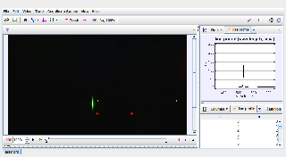

Tracker Experiment
This is the spectrum of a green solid-state laser with HeNe red (633nm) and green (543 nm) laser spots for calibration. The solid-state laser illuminates a vertical target.
Analysis:
- What is the wavelength of the solid-state laser? What is the uncertainty in the wavelength?
- What limitations do the equipment and methods impose on the accuracy of your wavelength measurement?
- What is the shape of the solid-state laser line? Is the width of the line significantly different from that of the HeNe lasers?
- What is the peak brightness of the solid-state laser relative to the red HeNe laser? Why might the measured brightness ratio be different from the true light intensity ratio? Is it the same as the relative brightness seen by eye?
Author: Douglas Brown
Contact: dobrown@cabrillo.edu